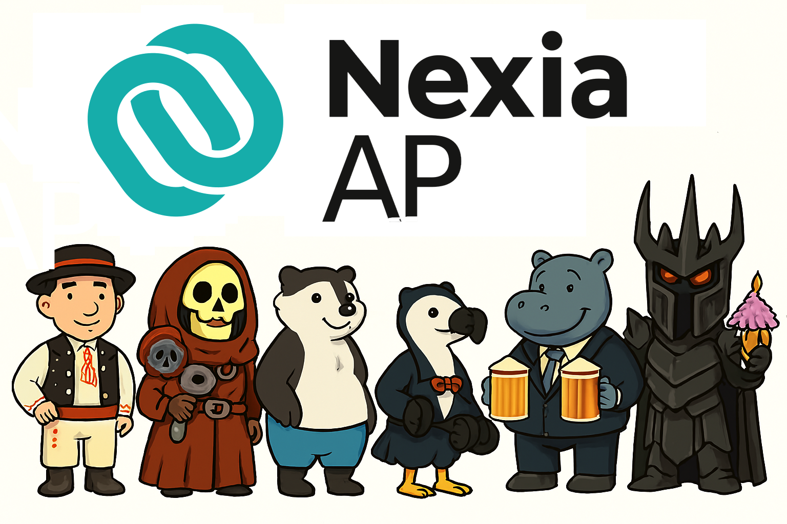

0. Účel generování vzorku
Volba definuje, které parametry jsou potřeba. Pro test kontrol a statistický výběr se zjednoduší požadované vstupy.
Zobrazí se až po výběru profilu.
1. Metoda výběru vzorku
2. Faktor spolehlivosti
3. Hladina Významnosti
4. Oblast dat pro výběr vzorku
5. Stanovení velikosti vzorku
Vyplňte žádanou velikost a zdůvodněte změnu
6. Tvorba vzorku
Parametry budou propsány do:
Buďte na mě hodní